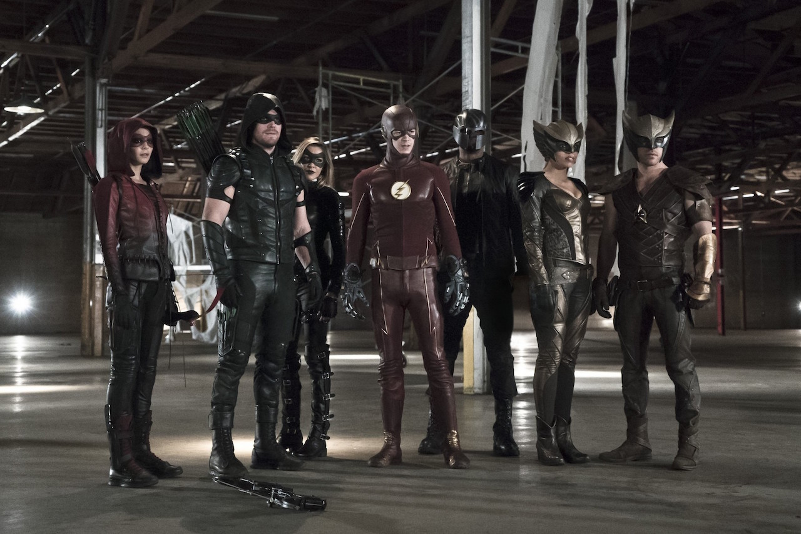

Flash S02|E08 Legends of Today
At this point it's become tradition to celebrate the end of the year with another crossover between Arrow and The Flash. But as often as the two shows intermingle, it's not enough to merely bank on the novelty of seeing Barry Allen and Oliver Queen fighting crime together. The hook with this year's two-part crossover is that these episodes are introducing both the Hawkman/Hawkgirl mythology and the immortal villain Vandal Savage. Essentially, this episode and tomorrow night's Arrow installment "Legends of Yesterday" are laying the last of the foundation for Legends of Tomorrow before it kicks off early next year. The end result of all of this is plenty of DC goodness, even if this first half felt fairly jumbled and chaotic.
For the most part, it was simply a treat to see the writers diving headlong into the complicated Hawkman/Hawkgirl mythology from the comics. Time and time again this fall, both The Flash and Arrow have shown that they no longer care about maintaining any semblance of realism to this DC Universe. Everything is on the table now, even the concept of two ancient lovers being perpetually reincarnated across time and hounded by the DCU equivalent of the Kurgan. More than almost any other element, I'm looking forward to Legends of Tomorrow exploring and enriching the shared history between Hawkman and Hawkgirl.

Half the fun of these crossovers is seeing the members of team Flash and Team Arrow reconnect, bond and butt heads, and this episode delivered plenty on that front. But it wasn't all fun and games. As entertaining as it is to see Felicity be Felicity and Diggle struggle to wrap his head around the crazy world he's been dragged into, this episode was often more concerned with the subtle friction developing between Ollie and Barry. Both men have dealt with some hardships in recent weeks. They both have seemingly unstoppable villains to contend with, and neither is especially eager to drop what they're doing to deal with an immortal serial killer. That was reflected nicely in the Ollie/Barry character dynamic tonight. They're not about to go "Batman v Superman" on each other, but things are clearly more tense than when they crossed paths last year.
Cisco was really the standout character, however. Not only did he have plenty of fun banter with his Team Arrow buddies (including that awkward high five with Felicity), he was really at the center of the conflict as he dealt with the idea that his new girlfriend is a reincarnated Egyptian superhero. It's always nice to see Carlos Valdes flex his dramatic muscles. And no doubt he'll have plenty more opportunity as he struggles to maintain his relationship with Kendra as she gets swept up by destiny.
It's also worth noting the subplot involving Wells and Caitlin developing a speed-enhancing drug. On one hand, this storyline stuck out as being completely divorced from the rest of the conflict. On the other, it's nice that this episode didn't completely ignore the ongoing conflict with Zoom, especially as the main storyline was devoted to setting up a completely different TV show. It's interesting to see Caitlin being drawn closer into Wells' orbit. The big question with her right now is whether she's doomed to become Killer Frost as the Season 1 finale teased. With the grim, obsessive Wells as her mentor, it's not hard to imagine her going down a dark path. Their creation of of the drug Velocity 6 seems less like the edge Barry needs in his fight with Zoom and more like crutch. But at least we got to see Jay briefly reclaim his speed powers and save his rival from certain death. Maybe now Joe and Barry will finally let Patty in on their big secret so she doesn't accidentally shoot any other doppelgangers from Earth-2.
This episode ended on an interesting note, as Ollie appears to have discovered the long-lost son his mother tried to hide from him. It's hard to say what this means for Ollie given how abruptly the episode ended, but it should make for another memorable wrinkle in Ollie's increasingly troubled life. To continue the story you have to watch Arrow.
Next weeks episode preview: